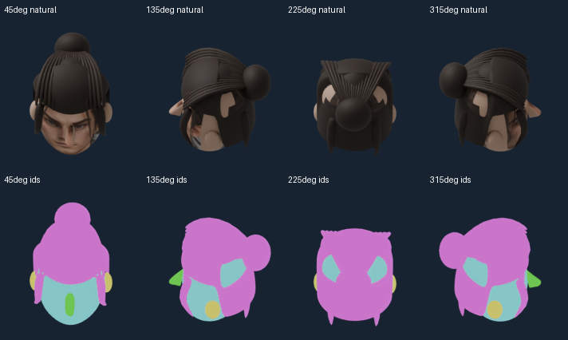
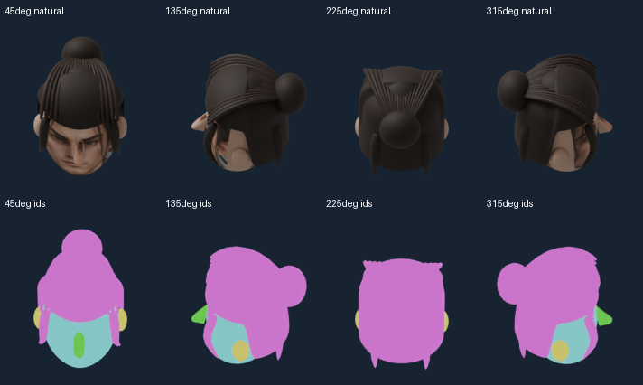
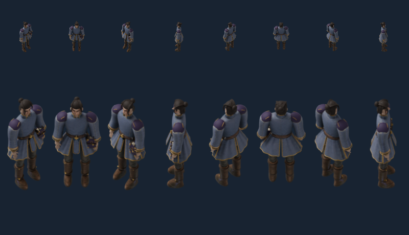
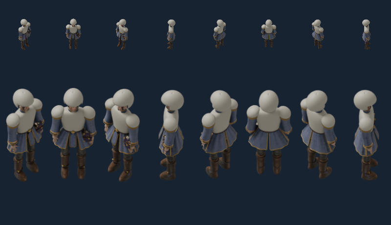

Targeted hair-shell defect PASS. Original model preserved; full character/gear art remains unqualified.
Natural material row / category-ID row. Cyan is skull, magenta hair, yellow ear, green nose. New native head sampling, same camera/light/crop before and after.


0°,45°,90°,135°,180°,225°,270°,315°. Upper50px, lower150px reference body axis.

